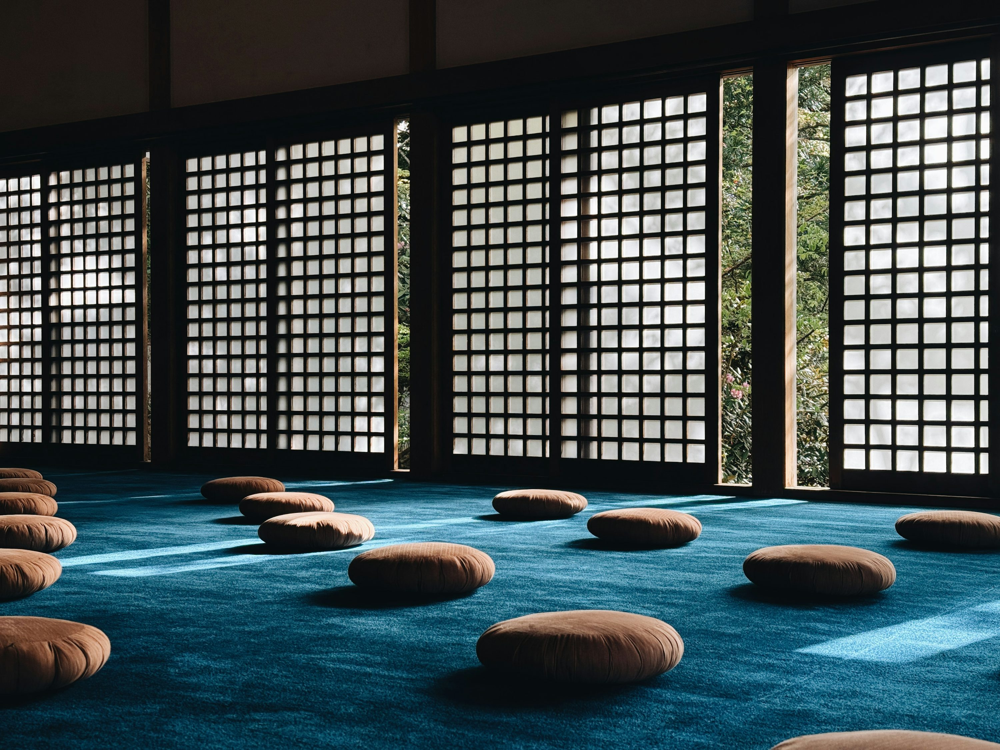

Before
Name the real question
Your application and preparation establish what is actually unresolved, so the day begins at the point rather than circling toward it.
The One-Day Intensive
1A concentrated encounter with the iRealization method for those ready to stop approaching the question indirectly.
Apply for One Day
Why One Day
Sometimes the question is already mature. What is needed is not more preparation, another practice, or a weekend away—but sustained attention with someone who will not let the inquiry become abstract.
The intensive removes the usual exits for one uninterrupted day. Dialogue, silence, and direct investigation follow the question itself rather than a fixed curriculum.
Before
Your application and preparation establish what is actually unresolved, so the day begins at the point rather than circling toward it.
During
The day moves between direct dialogue, quiet observation, and integration. There is no performance and no prefabricated schedule.
After
You leave with a clearer view of what was seen and what, if anything, still asks for a deeper container.
The Right Fit
This is for someone with a specific, persistent inner question who can give it their full attention for a day. Prior meditation experience is not required. Honesty and intellectual seriousness are.
Which Container?
Choose the retreat when you need distance from ordinary life, a residential container, and time for the work to unfold with others. Choose Still Waters for a shorter, lakeside encounter. Choose one day when your inquiry is focused and ready now.
Compare ProgramsBegin Here
$1,499 per attendee
Lunch and refreshments included. Availability and setting are confirmed during the mutual-fit conversation.
Apply for One Day